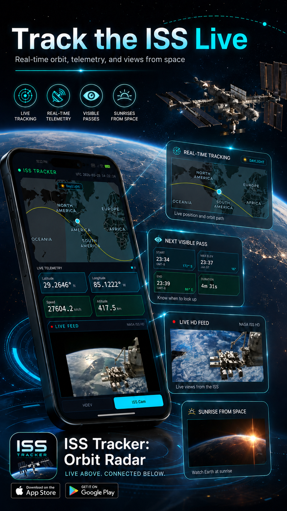
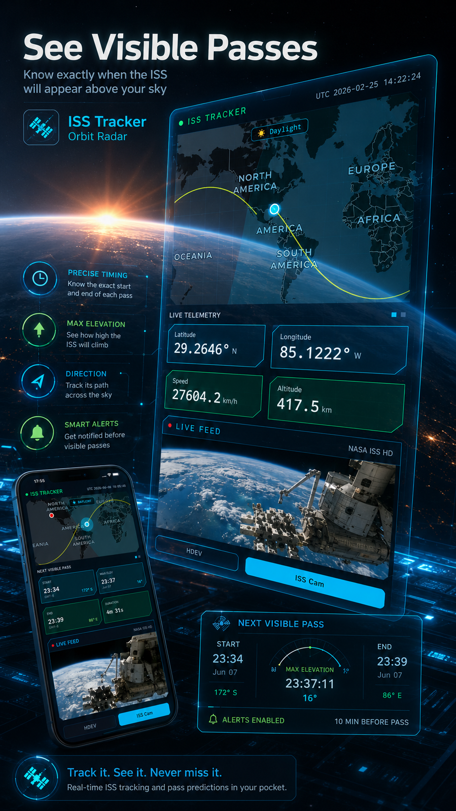
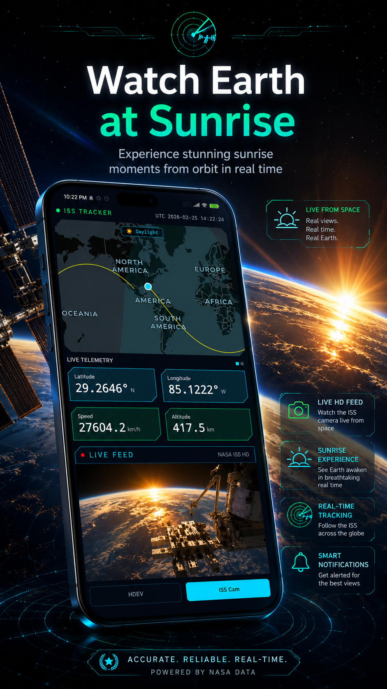
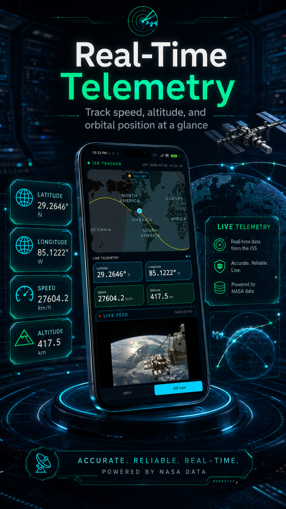

把轨道数据变成可理解的探索界面。
对普通用户来说，空间站并不只是屏幕上的一个点。ISS Tracker 通过实时位置、可视化轨迹和观测信息，让用户知道它在哪里、何时经过、如何抬头寻找。




- 实时位置 查看国际空间站与相关轨道目标的实时运行状态，理解它们与地球表面的关系。
- 过境时间 关注可见过境窗口，让用户知道什么时候有机会在夜空中看到空间站。
- 轨迹展示 用直观的轨道视图呈现运动路径，降低专业航天数据的理解门槛。
- 轻量探索 适合天文爱好者、亲子科普和日常观察，把一次抬头变成可计划的发现。